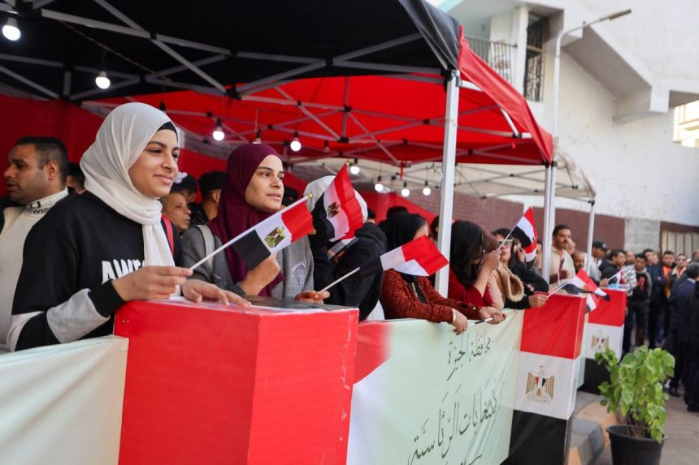

International observers document smooth voting process in Egyptian elections

- Khalil Ibrahim Al Thawadi, head of the Arab League’s election monitoring mission, commended the Egyptian people for their national and patriotic engagement in the presidential elections.
- As his delegation observed the electoral proceedings on Sunday, Al Thawadi expressed admiration for Egypt’s accomplishments, particularly the active participation of Egyptian women across all committees and the diligent efforts of all involved parties.
- An African Union (AU) delegation visited several polling stations in Ismailia governorate, including one at the Martyr Abdul Jawad Hosni Primary School, to assess the voting process.
- Christine Putin, a member of the International Integrity Coalition, reported no observed violations during the first day of Election 2024.
- Additionally, a Mediterranean Parliament observer delegation inspected the Egyptian Presidential Elections Commission’s operations at Qasr Al-Dabbara School in downtown Cairo.
- Alaa Shalaby, the coordinator of the Arab Organization for Human Rights’ international observer team, stated that the electoral process proceeded smoothly across six Egyptian governorates on the first day. The regional teams, part of the international group, visited 35 polling stations in 14 centers, covering approximately 130 subcommittees.
- Shalaby noted minor issues related to electoral campaigning near six polling stations but no significant concerns regarding the electoral process’s overall progress.
- The regional teams are expected to visit around 11 more centers in seven provinces.
- The organization is monitoring the presidential elections with a 38-member international team of election experts and leaders from major human rights organizations across 16 Arab and European nations.
Source : click here